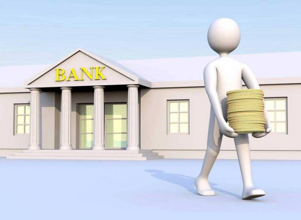

Istoria bancii
Banca Oamenilor Intreprinzatori din Romania. Banca se claseaza pe pozitia a 5-a in topul bancilor nationale, in functie de active. Misiunea Bancii Teste aceea de a sprijini dezvoltarea mediului de afaceri, prin produse si servicii inovatoare, oferite cu profesionalism. Istoria Bancii a inceput in Timisoara, in 1990, la initiativa unor oameni de afaceri. Ideea a fost aceea de a crea o banca locala. Spiritul antreprenorial al fondatorilor a determinat consolidarea pozitiei Bancii dar si angajatii care sunt responsabili activi, au principii solide si care au ca scop dezvoltarea valorii in societate,lucrand in echipe si astfel se ajunge la rezultate foarte bune.